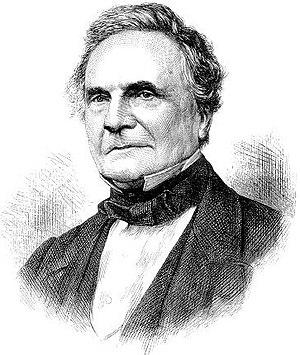

Чарлз Беббідж
читати детальніше на Вікіпедії
Ча́рлз Беббідж (англ. Charles Babbage; 26 грудня 1792 — 18 жовтня 1871) — англійський математик і економіст, винахідник різницевої машини з програмним керуванням.
Математичні дослідження Чарлза Беббіджа сприяли зародженню англійської математичної школи. Його економічні роботи отримали високу оцінку Карла Маркса.
Біографія
Чарльз народився 26 грудня 1792 року в Лондоні у родині банкіра. У вісім років хлопчика віддали до сільської школи в Альфінгтоні, оскільки у Чарльза були проблеми зі здоров'ям. Навчався в школах King Edward VI Grammar School[en] в Південному Девоні, а після в «Holmwood академії» в Міддлсексі. Шкільна бібліотека прищепила йому любов до математики. Беббідж залишив навчання в академії заради занять з двома приватними викладачами — священником з Кембриджа і викладачем з Оксфорда, який навчав Беббіджа класичним знанням. Беббідж вступив у Триніті-коледж в Кембриджі у 1810 році. Зі своїми друзями він заснував «Аналітичне товариство», «Клуб привидів», який займався дослідженням паранормальних явищ і клуб з назвою «Щипці» для амбулаторних хворих психіатричних лікарень.
У 1812 році Беббідж вступив до коледжу святого Петра у Кембриджі. Бувши найкращим математиком в коледжі, через два роки отримав ступінь без складання іспитів, зумівши здобути перемогу в дебатах на спірну тему.
А у 1814 році він отримав ступінь бакалавра. У тому ж році Чарльз Беббідж одружився з Джорджіаною Вітмур, і у 1815 році вони переїхали з Кембриджа до Лондона. За тринадцять років шлюбу у них було вісім дітей, але п'ятеро з них померли у дитинстві. У 1816 році він став членом Королівського Товариства Лондона. До того часу він написав кілька великих наукових статей з різних математичних дисциплін. У 1820 році, він став членом Королівського Товариства Единбурга і Королівського Астрономічного Товариства. У 1827 році він поховав батька, дружину і двох дітей. У 1827 році він став професором математичних наук у Кембриджі, і займав цю посаду протягом 12 років. Після того, як він покинув цей пост, він більшу частину свого часу присвятив справі свого життя — розробці обчислювальних машин.
детальніше тут
У 1838 році Беббідж винайшов шляхоочисник — металеву раму, яка кріпилася на локомотиві та прибирала перешкоди зі шляху руху. Він також розробив динамометр, який записував пройдені локомотивом кілометри.
Помер 1871 року. Похований на кладовищі Кенсал-Грін у Лондоні.
Мала різницева машина
Вперше Беббідж задумався про створення механізму, який дозволяв би виробляти автоматично складні обчислення з великою точністю в 1812 році. На ці думки його наштовхнуло вивчення логарифмічних таблиць, при перерахунку яких, були виявлені численні помилки в обчисленнях, обумовлені людським чинником. Ще тоді він почав осмислювати можливість проведення складних математичних розрахунків за допомогою механічного устаткування.
Також дуже великий вплив на Беббіджа надали роботи французького вченого барона де Проні, який запропонував ідею поділу праці при обчисленні великих таблиць (логарифмічних, тригонометричних тощо). Він пропонував розділити процес обчислення на три рівні. Перший рівень — кілька видатних математиків, які підготовляють математичне забезпечення. Другий рівень — освічені технологи, які організовували рутинний процес обчислювальних робіт. А третій рівень займали самі обчислювачі, від яких потрібно було лише вміння складати й віднімати. Проні навів Беббіджа на думку про заміну третього рівня (обчислювачів) механічним пристроєм.
детальніше тут
Велика різницева машина
У 1822 році Беббідж задумався про створення великої різницевої машини, яка дозволяла б замінити величезну кількість людей, що займаються обчисленням різних астрономічних, навігаційних і математичних таблиць. Це дозволило б заощадити витрати на оплату праці, а також позбутися помилок, пов'язаних з людським фактором.
Зі своєю пропозицією профінансувати створення великої різницевої машини Чарльз Беббідж звернувся до королівського астрономічного суспільства. Ті, і інші відгукнулися на цю пропозицію позитивно.
У 1823 році Беббідж отримав 1500 фунтів стерлінгів і розпочав розробку нової машини. Він планував сконструювати машину за 3 роки. Однак Беббідж не врахував складності конструкції, а також технічні можливості того часу. І вже у 1827 році було витрачено 3500 фунтів (більш як 1000 особистих грошей). Хід робіт по створенню різницевої машини сильно сповільнився
детальніше тут
Аналітична машина
Незважаючи на невдачу з різницевою машиною, Беббідж в 1834 році задумався про створення програмованої обчислювальної машини, яку він назвав аналітичною (прообраз сучасного комп'ютера). На відміну від різницевої машини, аналітична машина дозволяла вирішувати ширший ряд завдань. Саме ця машина стала справою його життя і принесла посмертну славу. Він припускав, що побудова нової машини потребує менше часу і коштів, ніж доопрацювання різницевої машини, тому що вона мала складатися з простіших механічних елементів. З 1834 р. Беббідж почав проєктувати аналітичну машину.
Архітектура сучасного комп'ютера багато в чому схожа з архітектурою аналітичної машини. В аналітичній машині Беббідж передбачив такі частини: склад (store), фабрика чи млин (mill), елемент керування (control) і пристрої введення / виведення інформації.
Склад призначався для зберігання як значень змінних, з якими здійснюються операції, так і результатів операцій. У сучасній термінології це називається пам'яттю.
Млин (арифметико-логічний пристрій, частина сучасного процесора) мав здійснювати операції над змінними, а також зберігати в регістрах значення змінних, над якими в цей момент здійснюється операція.
Третій пристрій, якому Беббідж не дав назви, здійснював керування послідовністю операцій, переміщенням змінних в склад і вилучення їх із нього, а також управління кінцевим результатом. Цей пристрій зчитував послідовність операцій і змінні з перфокарт. Перфокарти були двох видів: операційні карти та карти змінних. З операційних карт можна було скласти бібліотеку функцій. Крім того, за задумом Беббіджа, Аналітична машина повинна була містити пристрій друку і пристрій виводу результатів на перфокарти для подальшого використання.
детальніше тут
Інші заслуги Чарльза Беббіджа
Попри те, що Чарльз Беббідж вважається винахідником обчислювальних машин, насправді він був дуже різнобічна людина. Беббідж займався безпекою руху на залізничному транспорті, для чого обладнав вагон-лабораторію всілякими датчиками, показання яких фіксувалися самописцями. Винайшов спідометр. Брав участь у винаході тахометра. Створив пристосування, яке скидає випадкові предмети зі шляхів перед локомотивом.
У ході робіт над створенням обчислювальних машин, зробив великий прогрес у металообробці. Сконструював поперечностругальний і токарно-револьверний верстати, придумав методи виготовлення зубчастих коліс. Запропонував новий метод заточування інструментів та лиття під тиском.
Він сприяв реформування поштової системи в Англії. Склав перші надійні страхові таблиці. Займався теорією функціонального аналізу, експериментальними дослідженнями електромагнетизму, питаннями шифрування, оптикою, геологією, релігійно-філософськими питаннями.
У 1834 році Беббідж написав одну з найбільш важливих робіт «Економіка технологій і виробництв», в якій він пропонував те, що зараз називається «Дослідженням операцій».
Він був одним із засновників Лондонського статистичного товариства. Серед його винаходів були спідометр, офтальмоскоп, сейсмограф, пристрій для наведення артилерійської гармати.
Крім того, Беббідж був дуже товариською людиною. Часто суботами він збирав в будинку гостей. Іноді приходило від 200 до 300 людей, серед яких були такі знамениті люди того часу: Жан Фуко, П'єр Лаплас, Чарльз Дарвін, Чарльз Дікенс, Олександр Гумбольдт. Крім цього він підтримував близькі відносини з Юнгом, Фур'є, Пуассоном, Бесселя, Мальтусом.
Беббідж залишив величезний слід в історії XIX століття і зробив переворот не тільки в математиці та обчислювальної техніки, а й у науці в цілому.